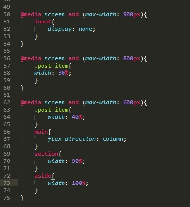

Разрешение экрана в зависимости от используемого устройства может колеблиться от 320px до 2560px. Для того что бы наш сайт корректно отображался на любых устройствах, необходимо делать адаптацию. Проще всего это делать с помощью медиазапросов. Медиазапросы позволяют задавать стили объектов в зависимости от характеристик устройства (например ширина экрана).
В тег head добавляем строчку
Синтаксис:
В фигурных скобка указываются стили которые будут применяться к объектам когда условие будет выполняться. ВАЖНО отметить что правила медиазапросов должны указываться в конце CSS файла, так как они могут перебивать стили указанные после них
Рассмотрим следующий пример
Код html

СТР 9-20 - на этом участке мы распологаем тег header (шапка сайта) в него мы помещаем тег nav. (навигация) в котором расположится наше меню. Меню будет состоять из списка с тремя строками (Home, About и Contacts). После тега nav мы помещаем поле input с типом search (строка поиска). nav и input помещаем в общий блок div.
СТР 22-43 далее мы указываем тег main (основное содержимое сайта). В этот раздел мы помещаем тег section внутри которого находится тег article (тоесть внутри секции блок со статьей, в нашем случае это пространство будет заполнено картинками)
После section мы помещаем тег aside (боковая панель нашего сайта) в боковой панели мы размоложим три ссылки с нашей навигацией и параграф с текстом
Теперь приступим к стилизации нашего сайта
рассмотрим следующий код:
блок body
блок header
блок header li - всем объектам li которые находятся в теге header
блок header a - всем объектам a которые находятся в теге header
блок .header-wrap - стили будут применяться к блоку div в который заключены меню и поле поиска
Блок input - здесь задаем два параметра определяющие внешний отступ нашего поля поиска
Блок main
Блок section и Блок aside - в этих блоках мы задаем ширину разделов section и aside в 70 и 30 процентов соответственно
Блок .post-item - здесь мы задаем стиль для всех блоков которые будут содержать картинки, которыми мы замостим раздел article
Теперь в фалйе css создадим правило медиазапроса. Выглядить оно будет вот так:
рассмотрим что мы тут указали.
СТР 50-54 - здесь указано что до тех пор пока ширина окна не привысит 900 пискселей поле input отображаться не будет.
СТР 56-60 - здесь указано что до тех пор пока ширина окна не привысит 800 пискселей размер ширины блоков в которых размещена картинка будет составлять 30%
СТР 62-75 - здесь указано что до тех пор пока ширина окна не привысит 600 пискселей